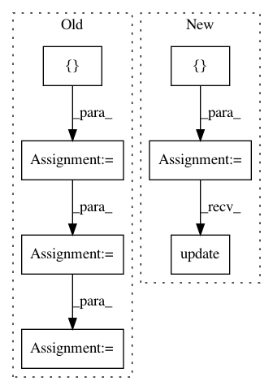

0de148f6892361e61d4b68cf97814e73692f6b1a,docs/_static/examples/gan.py,,,#,124
Before Change
// Configure data loader
os.makedirs("./data/mnist", exist_ok=True)
transform = transforms.Compose([
transforms.ToTensor(),
transforms.Normalize((0.5, 0.5, 0.5), (0.5, 0.5, 0.5))
])
dataset = datasets.MNIST("./data/mnist", train=True, download=True, transform=transform)
dataloader = torch.utils.data.DataLoader(dataset, batch_size=batch_size, shuffle=True, drop_last=True)
// Model and optimizer
After Change
from torchbearer.metrics import mean, running_mean
metrics = ["loss", mean(running_mean(D_LOSS)), mean(running_mean(G_LOSS))]
trial = tb.Trial(generator, None, criterion=gen_crit, metrics=metrics, callbacks=[saver_callback])
trial.with_train_generator(dataloader, steps=200000)
trial.to(device)
new_keys = {DISC_MODEL: discriminator.to(device), DISC_OPT: optimizer_D, GEN_OPT: optimizer_G, DISC_CRIT: disc_crit}
trial.state.update(new_keys)
trial.with_closure(closure)
trial.run(epochs=1)
In pattern: SUPERPATTERN
Frequency: 3
Non-data size: 7
Instances
Project Name: ecs-vlc/torchbearer
Commit Name: 0de148f6892361e61d4b68cf97814e73692f6b1a
Time: 2019-03-14
Author: mp2u16@ecs.soton.ac.uk
File Name: docs/_static/examples/gan.py
Class Name:
Method Name:
Project Name: GoogleCloudPlatform/python-docs-samples
Commit Name: 8c18cecf15a8935d8bf712edcc91ac05daf2176e
Time: 2020-06-16
Author: tmatsuo@google.com
File Name: appengine/standard/noxfile-template.py
Class Name:
Method Name:
Project Name: GoogleCloudPlatform/python-docs-samples
Commit Name: 5810701ca3a9fae4ef3baada2a137ee5a660353b
Time: 2020-05-15
Author: tmatsuo@google.com
File Name: noxfile-template.py
Class Name:
Method Name: